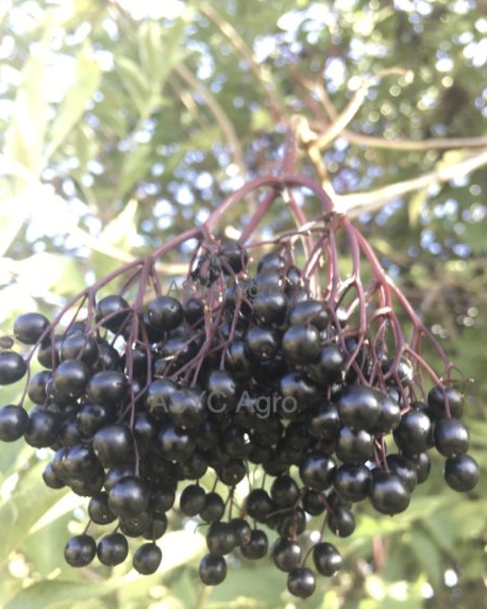
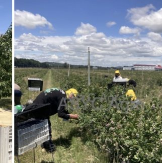
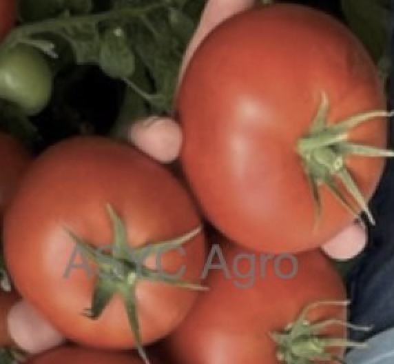
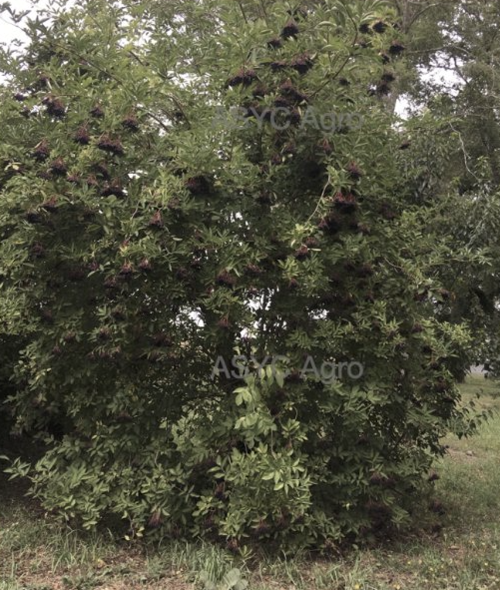
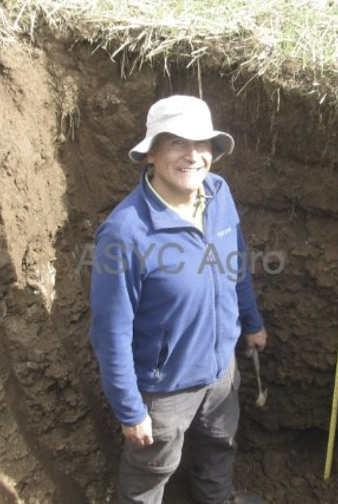

La fruticultura exige decidir bien en el momento justo, controlar los costos y comercializar a tiempo. Hace más de 20 años convertimos el trabajo del campo en un negocio rentable y sostenible.

Nuestro trabajo no se limita a la recomendación técnica: ayudamos a tomar decisiones con impacto económico real en cada predio.
Evaluación de suelos y calicatas, selección de especies y variedades, establecimiento de huertos y manejo productivo, adaptado a la escala y los objetivos de cada campo.
Control biológico de plagas y enfermedades en hortalizas al aire libre y bajo invernadero, en sistemas en suelo e hidropónicos. Producción inocua para el consumidor y el medioambiente.
Apoyo en cosecha, postcosecha y control de calidad, selección de berries, control de malezas y arriendo de equipos, con foco en la eficiencia y el control de costos.
Modelos de negocio, proyectos de inversión, resolución sanitaria y apoyo a la exportación. Comercializar la fruta de forma oportuna y sostenible en el tiempo.
Cultivos con trayectoria comprobada, en producción orgánica y convencional, a lo largo de Chile.

Arándano, frambuesa, frutilla y sáuco. Nuestro origen y mayor experiencia, del establecimiento a la exportación.

Manejo biológico de plagas y enfermedades en suelo e hidroponía, al aire libre y bajo invernadero.

Establecimiento y manejo de huertos en distintas especies y escalas, orgánicos y convencionales.

Proyectos reales en berries, frutales y hortalizas en distintas zonas del sur de Chile.
Desde Agricultura Familiar Campesina hasta empresas agrícolas consolidadas y cooperativas exportadoras.
Decisiones con impacto económico, mayor eficiencia operativa y proyectos que se sostienen y crecen en el tiempo.
Fruta inocua que respeta a las personas, los animales, las comunidades y el medioambiente.
Desde la primera evaluación hasta la venta de la fruta. Una asesoría oportuna evita errores costosos y acelera los resultados.
Suelos, calicatas, especies y objetivos del negocio.
Selección de variedades y diseño del huerto.
Sanidad, productividad y control de costos en temporada.
Cosecha y control de calidad de la fruta.
Venta, exportación y modelo de negocio sostenible.
Desde la flor hasta la cosecha, el fruto pasa por varias fases. Pasa el cursor (o el dedo) sobre cada etapa para verla en grande, y tócala para conocer en qué consiste.
Las flores se abren y comienza la polinización. Es una etapa crítica: el clima y los polinizadores definen cuántos frutos se formarán. Las heladas tardías pueden dañar la floración.
Diseñamos programas de manejo que cumplen las normativas nacionales e internacionales según el mercado de destino, y que se ajustan al tamaño de cada emprendimiento. Recomendamos solo productos disponibles en tu zona y acordes a un presupuesto racional — porque un buen manejo no debería depender del tamaño de tu huerto.
Trabajos reales en berries, hortalizas, agua y comercialización. Haz clic en cualquiera para ver el detalle completo.
Actividades, avances y lo que vamos viviendo en terreno, contado por nuestro equipo.
Información práctica sobre manejo de cultivos, plagas y negocio agrícola. Haz clic para leer.
Noticias actuales sobre berries, sáuco, manejo de plagas y mercado, de fuentes especializadas. Haz clic para leer la nota completa.
Si aún no los tiene o tiene dudas sobre cómo enfrentarla, conversemos. Analizaremos su situación y le diremos cómo avanzar con mayores perspectivas de negocio.